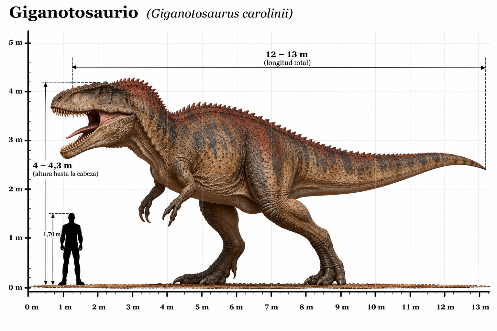

Giganotosaurus carolinii

El Giganotosaurus carolinii fue uno de los mayores dinosaurios terópodos carnívoros conocidos. Habitó América del Sur durante el Cretácico tardío, hace aproximadamente entre 99 y 97 millones de años. Sus restos fósiles fueron descubiertos en Argentina, concretamente en la provincia de Neuquén, en la Patagonia. Su nombre significa "lagarto gigante del sur" y hace referencia tanto a su enorme tamaño como a su procedencia geográfica. Poseía un cráneo grande y alargado, con numerosos dientes afilados y aserrados, adaptados para cortar carne. Sus extremidades posteriores eran fuertes y sus brazos, aunque relativamente pequeños, terminaban en tres dedos provistos de garras. Pertenecía a la familia Carcharodontosauridae, por lo que estaba más estrechamente relacionado con Carcharodontosaurus que con Tyrannosaurus rex. Fue uno de los principales depredadores de su ecosistema, donde convivió con grandes dinosaurios saurópodos. Aunque algunas estimaciones sugieren que pudo superar en longitud al Tyrannosaurus rex, las dimensiones exactas de los ejemplares más grandes continúan siendo objeto de estudio.
- Grupo: Terópodo.
- Familia: Carcharodontosauridae (carcarodontosáuridos).
- Período: Cretácico tardío (hace aproximadamente 99–97 millones de años).
- Alimentación: Carnívoro.
- Longitud: Aproximadamente 12–13 metros.
- Altura: Aproximadamente 3,5–4 metros hasta la cadera.
- Localización: América del Sur (Argentina, Patagonia).
